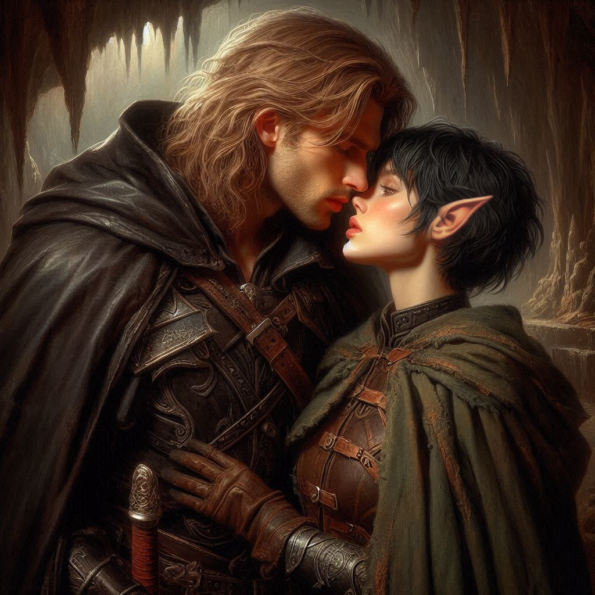
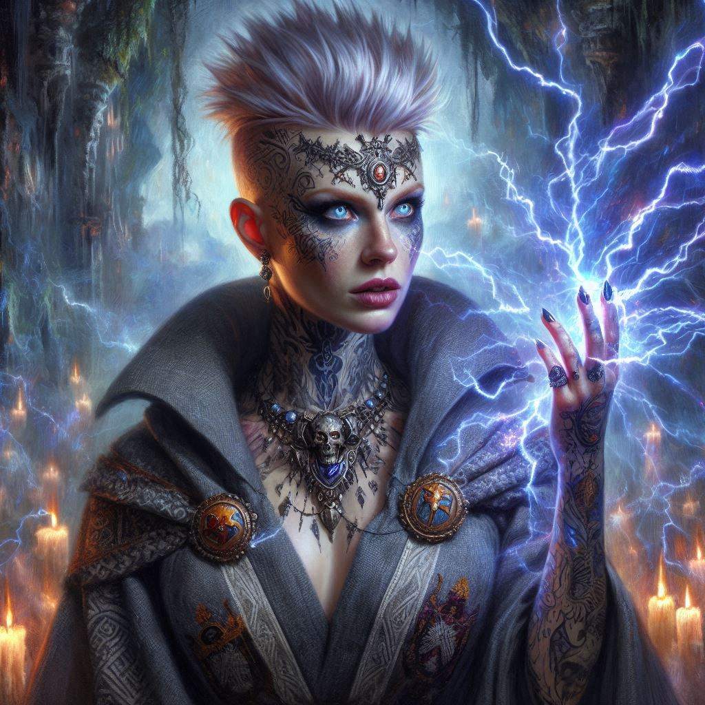

A Distraction Exploited
With grim determination, you take Baider’s arm and look him squarely in the eyes. His furrowed brow and tightly set mouth betray his worry, but you can’t let that hold you back. The stakes are too high.
"We have to split up, Baider," you insist. “If we both go after Varis, there’s no guarantee we’ll find Onyx in time. You’re the only one who can use the rune stone to reach him.”
Baider sighs heavily, rubbing his temples. "Kira, this isn’t just stubborn pride, is it?” His words are laced with frustration, the familiar grit of his voice reminding you of all the arguments that led you here. "If you’re not careful, you’ll end up like Onyx—entrapped by the very dangers you're trying to face."
You steel yourself and shake your head. “This is more than that, Baider. Onyx is in danger, and we’re running out of time. If anyone can help him now, it’s you.” The stubborn resolve in your voice finally breaks through Baider’s resistance, and he releases a heavy sigh, gripping the rune stone tightly.
"Fine. But don’t do anything reckless, Kira. If anything happens to you…,” he trails off, as if the words themselves are a weight he cannot bear.
You nod, emotions swirling under your determination. He presses his hand briefly on your shoulder, and you can sense his unspoken words. Then, with a final glance over his shoulder, Baider activates the rune stone and vanishes in a flash of blue light, leaving you alone.
The wind whips through the trees, whispering promises of ancient secrets and dark power. You turn toward the mouth of Hemlock Caverns, your heart pounding with both fear and anticipation. Standing there, as though waiting for you all along, is Jorsh.
The years have changed him. His once-boyish face is now hardened, a jagged scar running down his cheek, and shadows seem to cling to his figure. But his gaze softens when he sees you, a hint of the young man you once loved. Without a word, you cross the distance between you, and before you know it, his arms are around you. The world fades as you share a kiss, one filled with the years lost, with promises broken, and emotions you thought you had buried forever.
When you pull apart, Jorsh searches your face with an intensity that makes your heart ache. "Kira… you don’t have to do this," he murmurs. “Join me. Together, we can defeat Varis and end his dark reign.”
For a fleeting moment, you consider it, drawn to the strength in his words. But then you remember the havoc Varis has already caused, the lives shattered, and the depth of the betrayal against the kingdom. “I can’t, Jorsh,” you say softly, pain etching into your words. “Not like this.”
Before Jorsh can respond, a sharp crack echoes in the cavern. You whip around to see a tall, hooded figure emerging from the shadows—Liora, the sorceress, her hands glowing with arcane energy.
“Enough!” she commands, and with a swift motion, she sends a bolt of magic that hits Jorsh square in the chest. He gasps and crumples to the ground, momentarily stunned.
Your instinct is to reach for your weapon, but before you can act, the trees rustle, and armored figures emerge, each one bearing the royal insignia. In their midst stands Princess Hawthorn, dressed in the unassuming garb of a ranger, but her piercing gaze betrays her true authority.
“Kira Coldspring, you are under arrest for consorting with the enemy,” Hawthorn declares, her voice cold and unyielding.
You stagger back, the shock of her words cutting through you like a blade. “No… it’s not what it looks like,” you stammer, but the guards close in around you, binding your hands.
Jorsh stirs, regaining his senses, and his eyes narrow as he takes in the scene before him. Hurt and betrayal flash across his face as he struggles to stand. “I trusted you,” he spits, his voice dripping with venom. Before you can explain, he utters a single word of power, and in a flash of shadowy magic, he vanishes, leaving you alone in a tightening circle of guards.
The weight of your choices presses down on you as they drag you back toward the encampment, Hawthorn’s harsh orders ringing in your ears. Jorsh’s hurt, Baider’s concern, and the looming threat of Varis swirl around you, forming a tragic knot in the depths of your heart. The coldness of betrayal settles in, sinking you into a bleak silence as they march you away.